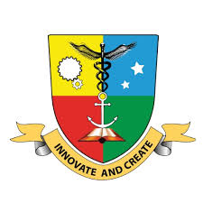

ABC BlendED, part of the Erasmus+ programme (Project ID: 101128996, Topic: ERASMUS-EDU-2023-CBHE-STRAND-2), aims to empower African universities in Agriculture by adapting the European BlendEd model. Since 2008, European universities have developed this course to enhance student collaboration across countries and disciplines, fostering teamwork, entrepreneurship, critical thinking, and communication skills. The project’s objective is to improve student employability and generate value for local communities by running pilot editions, designing syllabi, and creating didactic materials through Design, Implement, and Mainstream work units.
Soroti University, located in Uganda, partners with ABC BlendED to drive innovation in agricultural education, contributing to the project’s goal of mainstreaming BlendED courses across Africa.